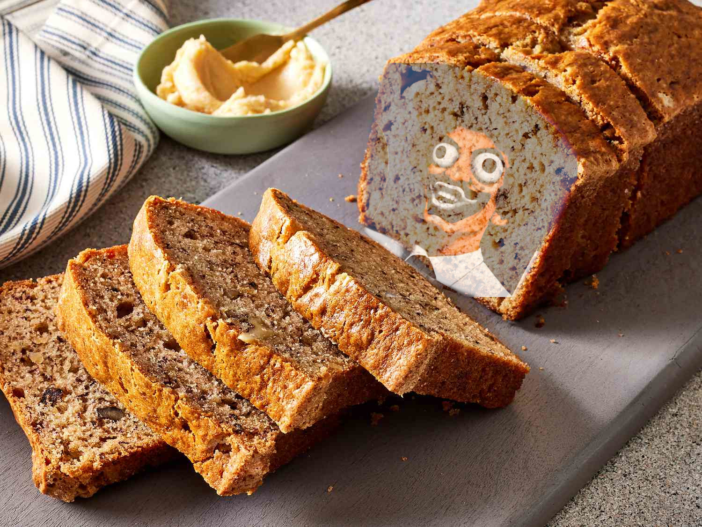

Do you see? Banana Bread

Ready to go bananas for some banana bread?
Note: man on bread is from Tally Halls music video: Banana Man. 10/10 recomend.
Ingredients
-
2 cups (250g) all-purpose flour (spooned & leveled)
-
1 teaspoon baking soda
-
1/4 teaspoon salt
-
1/2 teaspoon ground cinnamon
-
1/2 cup (8 Tbsp; 113g) unsalted butter, softened to room temperature
-
3/4 cup (150g) packed light or dark brown sugar
-
2 large eggs, at room temperature
-
1/3 cup (80g) plain yogurt or sour cream, at room temperature
-
2 cups (460g) mashed bananas (about 4 large ripe bananas)
from banana man
-
1 teaspoon pure vanilla extract
-
optional: 3/4 cup (100g) chopped pecans or walnuts
Directions
-
Adjust the oven rack to the lower third position and preheat the oven to 350°F (177°C).
Lowering the oven rack prevents the top of your bread from browning too much, too soon.
Grease a metal 9×5-inch loaf pan with nonstick spray. Set aside.
-
Whisk the flour, baking soda, salt, and cinnamon together in a medium bowl. Set aside.
-
Using a handheld or stand mixer fitted with a paddle or whisk attachment, beat the butter
and brown sugar together on high speed until smooth and creamy, about 2 minutes. With the mixer
running on medium speed, add the eggs one at a time, beating well after each addition. Then beat
in the yogurt, mashed bananas, and vanilla extract until combined.
-
With the mixer running on low speed, slowly beat the dry ingredients into the wet ingredients until
no flour pockets remain. Do not over-mix. Fold in the nuts, if using..
-
Pour and spread the batter into the prepared baking pan. Bake for 60–65 minutes, making sure to loosely
cover the bread with aluminum foil halfway through to prevent the top from getting too brown. The bread
is done when a toothpick inserted in the center comes out clean with only a few small moist crumbs. This
may be after 60–65 minutes depending on your oven, so begin checking every 5 minutes around the 60-minute mark.
-
Remove bread from the oven and allow the bread to cool in the pan set on a wire rack for 1 hour. Remove bread
from the pan and cool bread directly on the wire rack until ready to slice and serve.
-
Cover and store banana bread at room temperature for 2 days or in the refrigerator for up to 1 week. Banana
bread tastes best on day 2 after the flavors have settled together. See post above for freezing instructions.